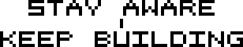
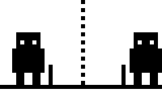
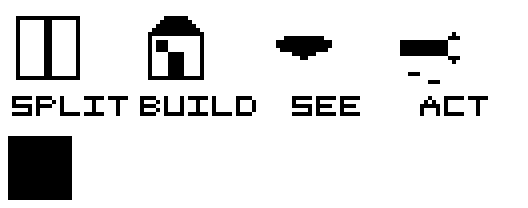

█████ █████ .██.. █████ ..█.. █...█ ..█.. ████. █████
█.... █.... █.█.. █.... .█.█. █...█ .█.█. █...█ █....
█████ ████. ..█.. ████. █████ █.█.█ █████ ████. ████.
....█ █.... ..█.. █.... █...█ ██.██ █...█ █..█. █....
█████ █████ █████ █.... █...█ █...█ █...█ █...█ █████
 |
 |
全栈偏前端的开发工程师，正在成为 Creative Engineer，关注前沿 AI 趋势。
把代码当镜子，把系统当修行 —— 这是我认真在做的事。

拆解 · 构建 · 觉察 · 行动
心还在跳，构建还在继续。
Se1faware = self-aware.
先看见自己，再构建世界。